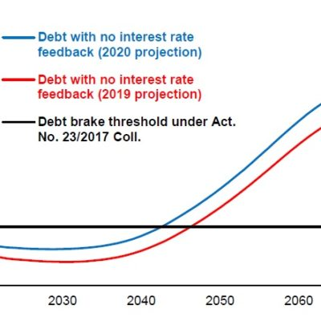
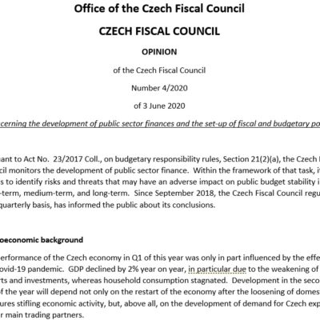
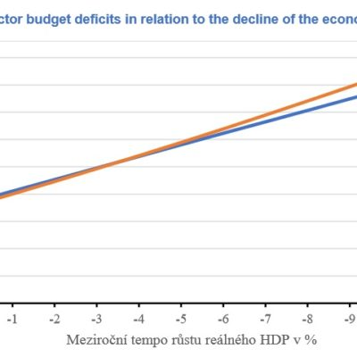

The Czech Fiscal Council has published its Report on the Long-Term Sustainability of Public Finances: shortening time to find a solution
The third Czech Fiscal Council Report on the Long-Term Sustainability of Public Finances was produced in the shadow of the coronavirus pandemic. By affecting the…

Statement of the Czech Fiscal Council of 3 June 2020 on the development of public sector finances and the set-up of fiscal and budgetary policy
Pursuant to Act No. 23/2017 Coll., on budgetary responsibility rules, Section 21(2)(a), the Czech Fiscal Council monitors the development of public sector finance. Within the…

Deficit of the Czech public finance to reach more than CZK 300 billion in 2020
The spread of the SARS-CoV-2 virus causing the disease called COVID-19 entails economic consequences for the economy of the Czech Republic that have been made…
About Us
About our organization.
Publications
Reports, opinions and other documents.
News
News about budgets and fiscal policy.
Budgets under scrutiny
Dictionary of terms. Data. Publications..
Members of The Czech Fiscal Council
Curricula vitae of Czech Fiscal Council members.
MANDATORY PUBLISHED INFORMATION
Pursuant to Act No. 106/1999 Coll., on free access to information.

@JProsecka @HrubyPavell @EZamrazilova Citace přímo z článku, na nějž vedl odkaz u původního tweetu: "Z mého pohledu by se dal tento výpadek alespoň částečně vyvážit například omezením systému daňových slev, odečitatelných položek a nezdanitelných částí příjmů."